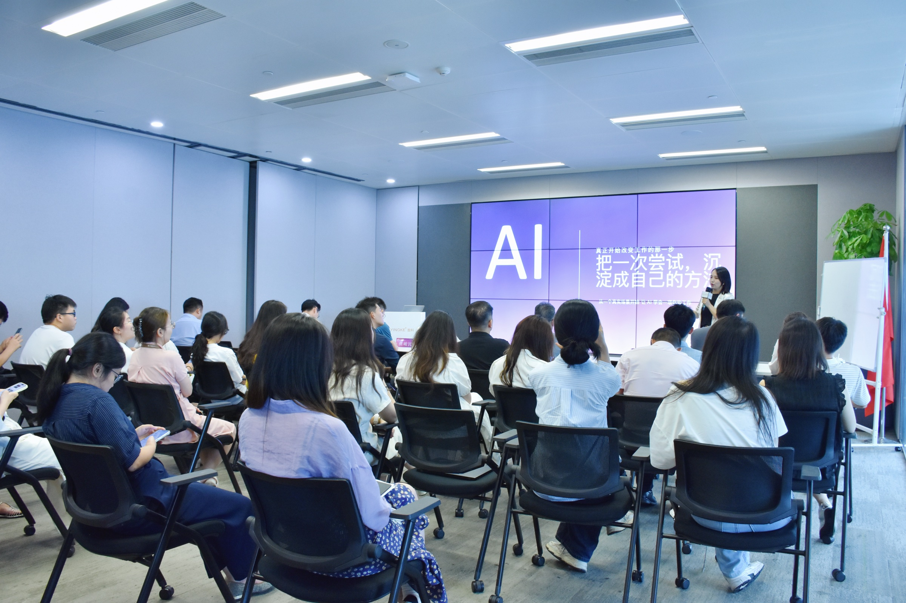
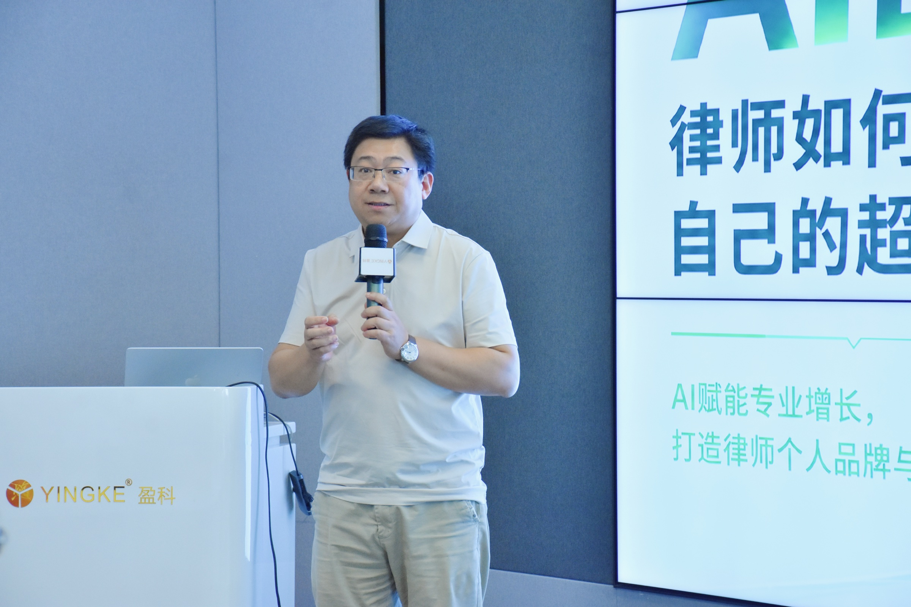
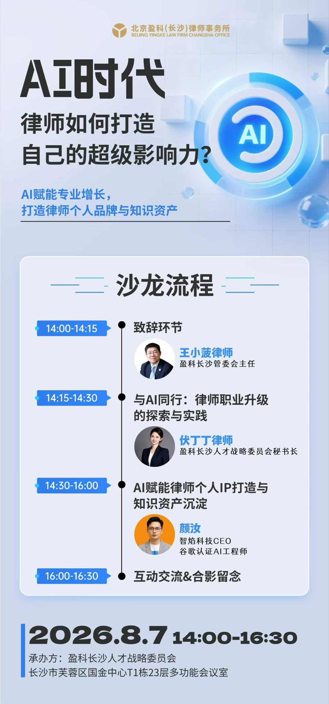
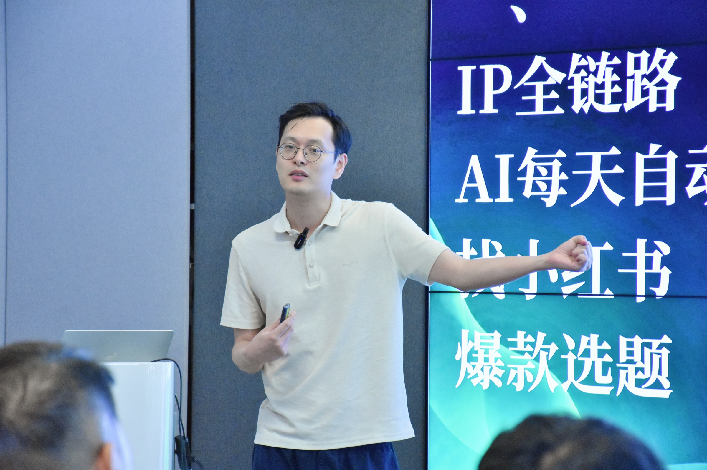
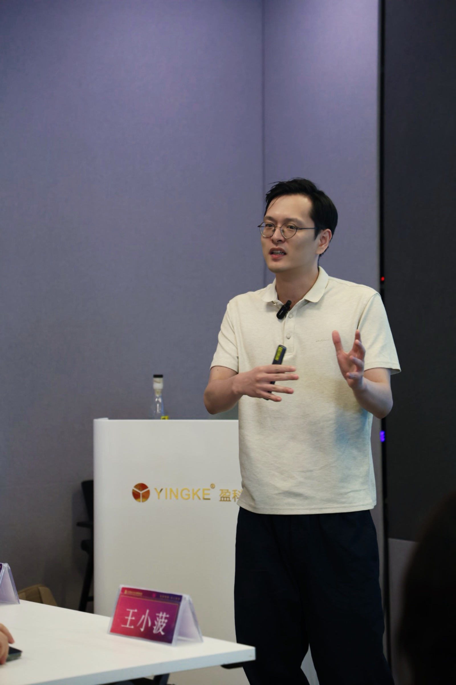
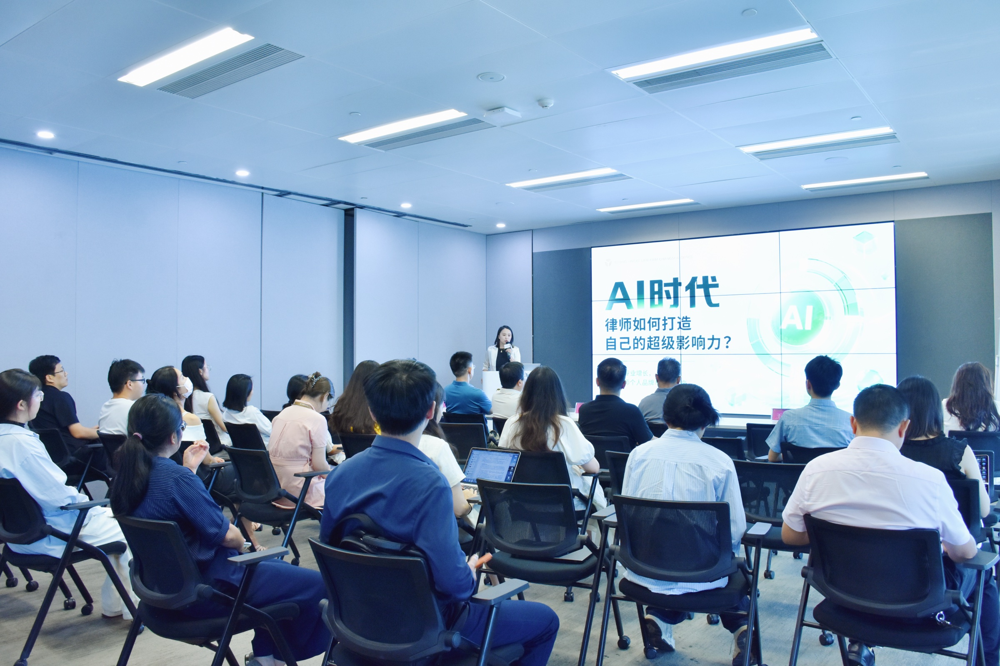
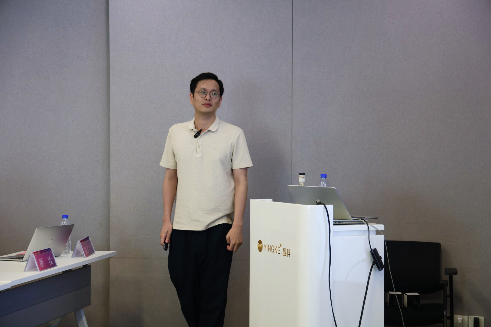
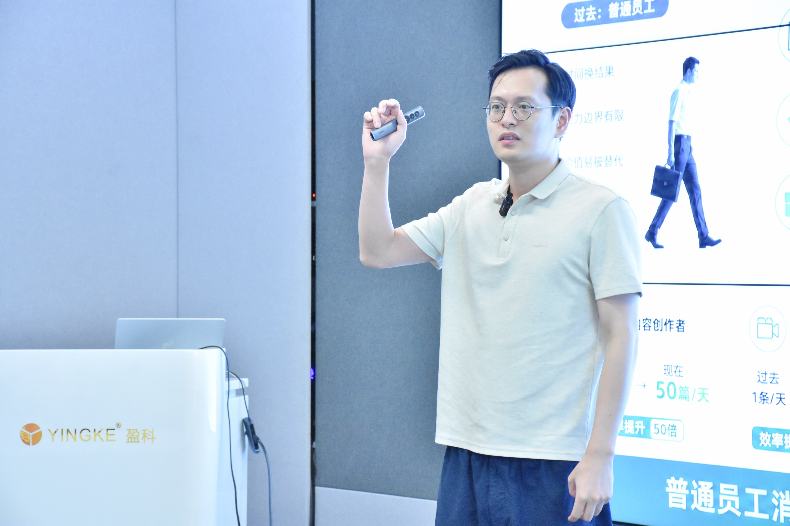

当 AI 进入法律行业，真正拉开差距的，不是谁多装了几个软件，而是谁先把知识、内容和工作流程连成了一套自己的系统。

今天，我走进盈科，和律师们聊了一个看起来很新、但很快会变成基本功的问题：AI 到底应该怎样进入律师的日常工作？
盈科是亚洲规模领先的头部综合律师事务所。也正因为面对的是这样的平台，我这次去盈科分享的重点，不是展示几个新工具，而是和律师们一起讨论：AI 怎样真正进入律师的工作。


我没有把这次分享做成一场工具展览，也没有从“现在最火的 AI 软件有哪些”开始。因为工具会更新，真正值得沉淀的，是一套律师能够反复使用、持续复用的工作方法。

一、律师用 AI 的第一步，不是找工具，而是整理自己的工作台
很多人以为自己不会用 AI，是因为还没有找到“最好用”的那个工具。真正的原因，往往是资料太散：办过的案件在不同文件夹里，常用的文书模板在电脑和网盘之间来回找，自己的经验没有被整理成任何人都能调用的知识。
所以我和现场的律师交流时，反复强调一个动作：先把自己的资料、知识和流程收拢起来，再谈自动化。
这个工作台不一定一开始就很复杂。它可以从三类内容开始：一是自己的专业资料，二是高频使用的文书和表达模板，三是从咨询、办案、获客到复盘的固定步骤。
当这些内容被整理之后，AI 才不再只是一个聊天窗口，而会变成一个真正能帮你干活的助手。

二、律师做个人 IP，不是每天发很多，而是让每一次表达都和专业能力连接
第二个话题，是律师个人 IP。
我越来越觉得，律师做内容不应该陷入“每天必须发多少条”的焦虑。真正重要的是：你对谁说，解决什么问题，用什么方式让别人记住你的专业。
一条好的法律内容，不只是把法条解释一遍。它应该从一个真实场景出发，讲清楚当事人最担心的损失，再给出能够执行的判断路径。这样，内容才不是单纯曝光，而是在替律师建立信任。


所以，律师 IP 的核心不是“看起来很会做内容”，而是让别人通过你的内容，逐渐知道三件事：你最擅长处理什么问题，你的判断和别人有什么不同，以及遇到类似问题时为什么应该先想到你。
三、真正的 AI 转型，是从一个人会用，走向一间律所能协作
这次在盈科，最让我有感触的不是某一个工具，而是大家开始把问题从“律师个人怎么用 AI”，往前推进到“律所怎样形成自己的 AI 能力”。
个人会用，是起点。组织能复用，才是规模化的开始。
当律师个人的知识库、内容方法和工作流逐渐沉淀下来，下一步就可以把不同业务方向、不同岗位的经验，整理成更清晰的协作方式：谁负责收集，谁负责判断，哪些内容可以交给 AI 预处理，哪些环节必须保留专业人员的复核。
这不是把律师变成机器，也不是让 AI 替律师做决定。恰恰相反，是让律师把更多时间放在判断、沟通和真正需要专业经验的地方。

这次去盈科讲课，我带去的是 AI 方法，也带回来一个更确定的判断：
律师行业不会因为 AI 出现就失去专业价值，但不会使用 AI、不会沉淀自己的工作系统，确实会越来越难保持效率和竞争力。
先从一张工作台开始，把自己的经验收好、把自己的表达讲清楚、把自己的流程跑通。真正的变化，往往就是从这一步开始。